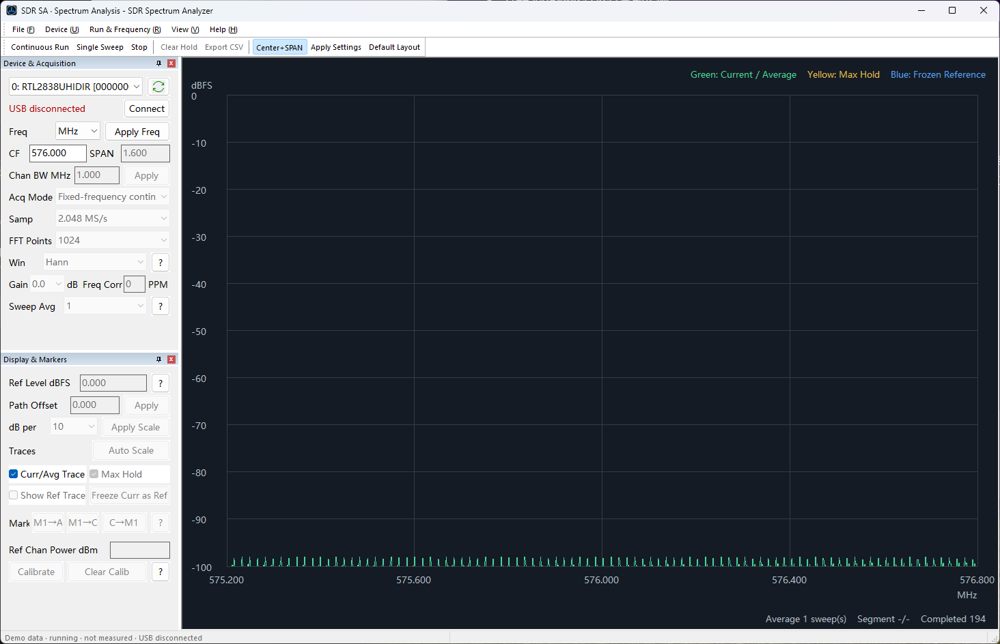
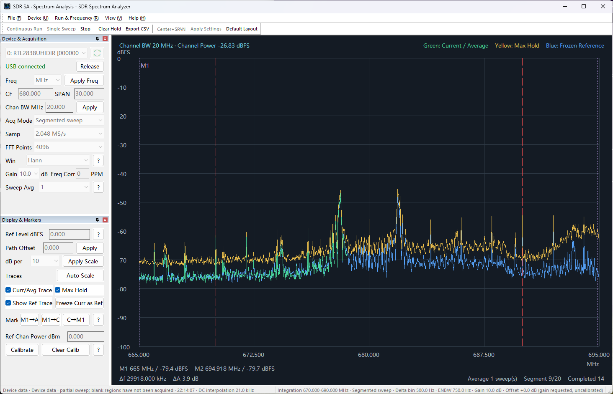
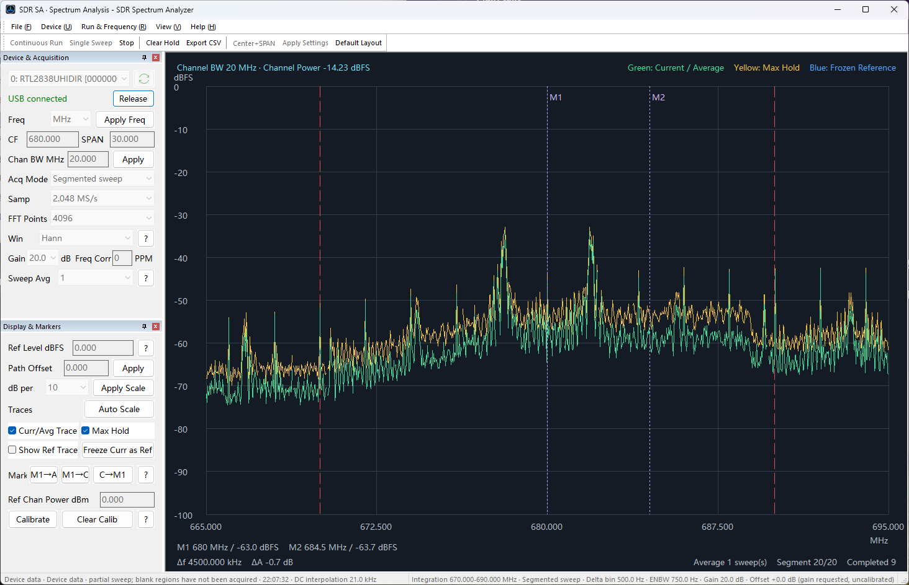

SDR Spectrum Analyzer User Guide
Product: SDR Spectrum Analyzer Publisher: Mattino 507 Software Version: 1.0 Last updated: September 2026
1. Introduction
SDR Spectrum Analyzer is a Windows desktop application for viewing and analysing RF spectrum data with tested compatible USB software-defined radio (SDR) hardware. It presents frequency-domain traces, markers, channel analysis, configurable acquisition settings, segmented sweeps, and CSV export.
It is a spectrum visualisation and analysis application, not a general-purpose radio receiver or audio-demodulation application.
2. Measurement scope and important limitations
V1.0 normally displays relative signal levels in dBFS: decibels relative to the digital full-scale level of the SDR. dBFS is not the same as RF input power in dBm.
Displayed values depend on the SDR tuner and ADC response, selected gain, frequency, sample rate, connected cables and attenuators, and the RF environment. A value nearer 0 dBFS is stronger, but values too near 0 dBFS can clip the ADC and distort the spectrum.
The application includes a channel-power calibration workflow for a matching measurement setup and reference instrument. Such a calibration is conditional on its saved setup; it is not a universal device calibration. Do not treat V1.0 as a calibrated laboratory spectrum analyser, a precision power meter, or a guarantee of absolute dBm accuracy.
3. Free and Full Version
SDR Spectrum Analyzer is a free application. The Free Version has no time limit, no trial period, and no usage counter; it does not expire or stop working. The Full Version is a one-time upgrade that unlocks the remaining controls and measurement features. There is no subscription.
The Free Version acquires live spectrum from supported hardware at a fixed instrument configuration. You choose the centre frequency; the remaining capture and display settings are held at the values in the table below.
| Setting | Free Version | Full Version |
|---|---|---|
| Centre frequency | Adjustable, 24-1766 MHz | Adjustable, 24-1766 MHz |
| Span | Fixed at 1.600 MHz | Adjustable |
| Channel bandwidth | Fixed at 1.000 MHz | Adjustable |
| Acquisition mode | Fixed-frequency continuous | Fixed span or segmented sweep |
| Sample rate | 2.048 MS/s | 1.024, 2.048, or 2.4 MS/s |
| FFT points | 1024 | 1024 to 16384 |
| Window | Hann | Hann or Blackman-Harris |
| Gain | 0 dB | Adjustable |
| Frequency correction (PPM) | 0 | -200 to +200 |
| Sweep averaging | 1 | 1, 4, 8, 16, or 32 |
| Reference level | 0 dBFS | Adjustable |
| dB per division | 10 | Adjustable |
| Path offset | 0 dB | Adjustable |
Both versions include device refresh, selection, Connect and Release; centre-frequency tuning across the whole 24-1766 MHz range; the Current / Average trace; frequency-unit selection; Demo Data as a data source; and Save Configuration / Load Configuration.
The following require the Full Version:
| Feature | Free Version | Full Version |
|---|---|---|
| Markers M1 and M2 | - | Available |
| Delta marker readout | - | Available |
| Channel power | - | Available |
| Segmented (wide-span) sweep | - | Available |
| Channel-power calibration | - | Available |
| Max Hold | - | Available |
| Frozen Reference | - | Available |
| Auto Scale | - | Available |
| CSV export | - | Available |
Loading a configuration file in the Free Version. A .cfg file written by the Full Version can be loaded in the Free Version. Settings the Free Version does not adjust are set back to the Free values shown above. This is normal behaviour, not an error and not a damaged file; loading the same file again after upgrading restores the stored values.
Demo Data is a data source, not an upgrade. Selecting Demo Data changes where the displayed data comes from. It does not unlock anything: every feature marked Full Version above stays Full Version while Demo Data is selected.
Upgrading. Help > Upgrade to Full Version... opens the Full Version upgrade flow when the Store product is available. See Menus and toolbar reference.
4. System and hardware requirements
- A supported Windows desktop environment. The application targets Windows Desktop with a minimum version of Windows 10 2004.
- Tested RTL2838-based USB SDR hardware (VID:PID
0BDA:2838) with an R820T-series tuner. - A functional Microsoft WinUSB binding on the device's Interface 0 (
MI_00).
Only the tested RTL2838/R820T-series path is claimed. Compatibility with all RTL-SDR devices, RTL2832U devices, clones, or other tuner families is not claimed.
5. Installation
Install SDR Spectrum Analyzer using the release package supplied for the chosen release channel.
Application installation and SDR driver preparation are separate. The application does not install, download, update, replace, or otherwise modify drivers. Compatible hardware must already have the required Windows driver configuration before it can be accessed.
The production WinUSB signing and distribution architecture remains subject to Microsoft guidance. This guide deliberately does not provide a driver-download, certificate, Test Mode, Zadig, or recovery procedure. Detailed driver troubleshooting belongs to future supported troubleshooting material.
6. Getting started
- Start SDR Spectrum Analyzer.
- Connect tested compatible SDR hardware whose Interface 0 is already ready for WinUSB.
- In Device & Acquisition, select the refresh button beside the device list, then select the listed device.
- Select Connect. When the device opens, the status text turns green and reads USB connected, and the button becomes Release.
- Set the centre frequency. In the Full Version, also set span, acquisition mode, sample rate, FFT points, window, gain, frequency correction, and sweep averaging as needed.
- Select Single Sweep for one completed acquisition or Continuous Run for repeated acquisition.
- Inspect the trace, channel range, and status information.
- Select Stop when you need to end a running acquisition.
- Select Release when you have finished with the device.
To try the application without hardware, select Run & Frequency > Data Source > Demo Data (not measured) and then Single Sweep or Continuous Run. No USB connection is required. Demo Data is generated, not measured, and Full Version features remain Full Version while it is selected.
7. Main window overview

The main window contains these areas:
- Device & Acquisition: hardware selection and capture settings.
- Display & Markers: scaling, traces, markers, path offset, and channel-power controls.
- Spectrum display: traces, axes, channel boundaries, and marker readouts.
- Output & Diagnostics: timestamped user-facing status and diagnostic messages. This pane is hidden when the application starts; show it from View > Output & Diagnostics.
- Status bar: device/acquisition state and spectrum or channel context.
- Menu and toolbar: shortcuts to the commands described below.
The left-side settings panes can be docked and may scroll when their available height is limited. Restore Default Layout restores the application toolbar and dock-pane layout, which hides Output & Diagnostics again.
8. Device and acquisition
Device controls
The first row holds the device list and a compact refresh button. The second row shows the connection state and the one action that changes it.
- Device list: lists enumerated SDR devices.
- Refresh (the button beside the device list): enumerates supported devices and reports readiness.
- Connection status: read-only text. It reads USB disconnected in red when no device is open, and USB connected in green when one is. It is an indicator, not a button.
- Connect / Release: the action button. It reads Connect while disconnected and opens the selected listed device. Once a device is open it reads Release and closes the connection. Release stays available during an acquisition; using it then stops the acquisition first and closes the device afterwards.
The same commands are also on the Device menu, where the disconnect command is named Disconnect Device. That menu additionally offers Check Connection, a diagnostic operation described under Troubleshooting; it is not a required step in the normal connection sequence.
The readiness message distinguishes a missing device, an unavailable WinUSB Interface 0, a ready interface, and a backend access failure. A ready interface is still required before connection and capture can succeed.
Frequency and acquisition controls
- Frequency unit: Hz, kHz, MHz, or GHz for frequency entry.
- Center / Span or Start / Stop: the two frequency-entry modes. Use Center+SPAN to switch between them. The centre frequency is adjustable in both versions; the span is Full Version only.
- Channel BW MHz (Full Version): channel integration width. Applying it uses the current display centre as the channel centre.
- Acq Mode (Full Version): fixed-span acquisition or segmented sweep.
- Sample rate (Full Version): 1.024, 2.048, or 2.4 MS/s.
- FFT Points (Full Version): 1024, 2048, 4096, 8192, or 16384.
- Window (Full Version): Hann or Blackman-Harris.
- Gain (Full Version): requested tuner gain from the available application list. The device selects the closest supported tuner step.
- Freq Corr / PPM (Full Version): integer frequency correction from -200 to +200 PPM. Zero disables correction.
- Sweep Avg (Full Version): 1, 4, 8, 16, or 32 completed sweeps.
In the Free Version these settings are held at the fixed values listed in Free and Full Version.
Capture-affecting settings, data-source changes, and configuration load/save are unavailable while an acquisition is active. Stop first, then apply the change.
9. Acquisition modes
Fixed span
Fixed span is limited to the usable instantaneous bandwidth of the selected sample rate and FFT configuration. The application excludes edge and DC-affected bins from the usable stitched data area.
Segmented sweep (Full Version)
For a wider span, SDR Spectrum Analyzer retunes through sequential frequency segments and stitches their usable FFT bins into the displayed range. It does not acquire the entire displayed span simultaneously.
Each segment uses four FFT frames internally and averages their linear power. Sweep Avg then averages corresponding bins across complete sweeps. Higher averaging reduces variation but increases settling time and slows response to changing signals.
10. Running measurements
- Continuous Run starts repeated device acquisition or repeated Demo Data updates.
- Single Sweep completes one acquisition sweep and then stops.
- Stop requests that the current acquisition or demo run stop. The last published result remains displayed.
- Clear Max Hold (Full Version) clears the maximum-hold data collected so far.
Continuous Run and Single Sweep are available only when the selected data source is ready:
| Data source | USB state | Continuous Run / Single Sweep |
|---|---|---|
| Device Data | Disconnected | Unavailable |
| Device Data | Connected and idle | Available |
| Demo Data | Not required | Available |
While an acquisition is already running, neither command is available as a way to start a new one; stop the current acquisition first. Status messages for connection, capture, stop, and errors are written to the status bar and to Output & Diagnostics, which does not have to be visible to receive them.
11. Spectrum display and traces

The plot shows frequency horizontally and dBFS by default vertically. If a matching saved channel calibration is active for the current device and setup, eligible channel and trace readouts can use dBm; otherwise they remain dBFS.
- Current / Average Trace shows the current processed result or the selected sweep average.
- Max Hold (Full Version) retains the highest observed value at each frequency bin until cleared.
- Frozen Reference (Full Version) shows a separately frozen trace for visual comparison. Freeze Curr as Ref captures the current trace and its original frequency range.
- Ref Level dBFS (Full Version) sets the top value of the display scale. It does not change hardware gain or acquired samples.
- dB per (Full Version) selects the vertical division size; Apply Scale applies the entered scale.
- Auto Scale (Full Version) sets a practical scale from the current trace.
- Path Offset (Full Version) is a non-negative display and calibration-path compensation value. Apply it after entering the known path loss or attenuation.
The Free Version shows the Current / Average trace at a reference level of 0 dBFS, 10 dB per division, and no path offset.
Stable production colours are green for Current / Average, yellow for Max Hold, and blue for Frozen Reference.
12. Markers and measurements

Markers, the delta readout, channel power, and the calibration workflow described in this section require the Full Version.
The plot has two markers, M1 and M2.
- Left-click a valid plotted point to place M1.
- Shift + left-click a valid plotted point to place M2.
- Drag an M1 or M2 dashed line horizontally to move it.
- M1→A moves M1 to the highest valid displayed trace point.
- M1→C moves M1 to the display centre.
- C→M1 changes the display centre to M1. If capture is running, the application stops and resumes it after the centre change.
Marker readouts show the marker frequencies and levels. Delta readout shows the frequency and level difference between M2 and M1.
Channel power and integration range
The channel range is centred on the current display centre and uses Channel BW MHz. The plot draws its range boundaries. A channel result becomes available only after a complete, valid sweep covering that range and the selected average count.
The Ref Chan Power dBm field and Calibrate button are for a reference-instrument calibration workflow. Calibration requires device data, a live connected device, a valid completed channel result, no clipping, a matching current capture setup, a valid path offset, and a reference input from -160 to +30 dBm. Clear Calib removes the saved channel calibration record.
13. Frequency and span controls
Use the selected frequency unit when entering values. Center+SPAN switches the two entry fields between:
- centre frequency plus span; and
- start frequency plus stop frequency.
The valid display range is 24 MHz to 1766 MHz. In the Free Version the span is fixed at 1.600 MHz and only the centre frequency can be moved within that range. In the Full Version the span is adjustable, with a minimum of 10 kHz. Changing range clears the active device snapshot; in Demo Data mode it produces a new generated view. Wider spans use segmented acquisition as described in Acquisition modes.
Use the mouse wheel over the plot to zoom around the pointer. Drag an empty plot area to pan. These interactions are unavailable while a hardware capture is busy.
14. Data source
The Data Source submenu offers:
- Device Data: spectrum data acquired from a connected supported SDR.
- Demo Data (not measured): generated demonstration data.
Demo Data does not access USB and cannot be used for RF measurement or calibration. It is intended for learning the user interface and display behaviour.
Demo Data is an alternative data source only. It is not a Full Version trial and does not unlock Full Version features; see Free and Full Version.
15. Configuration files
File > Save Configuration writes an .cfg text file selected by the user. File > Load Configuration reads a compatible .cfg file after acquisition has stopped.
The current format is versioned as SDR_SA_CONFIG=1 and stores capture settings, display scale, trace visibility, channel width, path offset, data source, frequency-entry mode/unit, and an optional reference channel power. It is an application configuration file; do not assume it is a general interchange format or manually edit it unless you can validate the result in the application.
In the Free Version, settings that the Free Version does not adjust are set back to their Free values when a file is loaded. See Free and Full Version.
16. Exporting data
Export CSV requires the Full Version. It is available when a spectrum trace exists. The application asks for a user-selected .csv location.
The CSV includes comment metadata for the data source, dBFS unit, capture settings where a device snapshot exists, channel result status, and path offset. Its table columns are:
frequency_hz,power_dbfs,valid
valid identifies bins containing usable plotted data. For device data, the file may also include a calibrated channel_dbm metadata field only when the current saved calibration matches the snapshot. The primary per-bin values remain dBFS.
17. Output and diagnostics
The Output & Diagnostics pane records timestamped messages for application readiness, device refresh, driver readiness, connection, acquisition start/stop, configuration actions, export, and user-visible errors.
The pane is hidden when the application starts, so that the spectrum display gets the full window height. Select View > Output & Diagnostics to show it; the menu item is checked while the pane is visible, and selecting it again hides the pane. Restore Default Layout also hides it.
Messages are recorded whether or not the pane is visible, so nothing is lost while it is hidden. The pane keeps a bounded history of the most recent messages; in the current implementation the oldest entries are discarded beyond 1000 lines.
File > Save Diagnostic Log... writes the accumulated messages to a file you choose. The pane does not have to be visible, and you do not need to open it first. Use this file when reporting a problem.
Output & Diagnostics is not a supported interface for internal driver installation, certificate setup, or engineering recovery procedures.
18. Status bar
The status bar presents a concise device and acquisition state plus spectrum context. Depending on the current data, it can include the data source, single/continuous or stopped state, channel integration range, acquisition mode, FFT bin spacing, ENBW, gain, path offset, calibration state, and sweep progress.
The displayed uncalibrated or 未标定 status means that the requested or active gain is not represented by a matching saved calibration; it does not by itself indicate a device failure.
19. Menus and toolbar reference
File
- Load Configuration and Save Configuration: see Configuration files.
- Save Diagnostic Log...: writes the accumulated diagnostic messages to a file you choose. See Output and diagnostics.
- Exit: closes the application.
Device
- Refresh Devices, Connect Selected Device, and Disconnect Device: see Device and acquisition. Disconnect Device is the same operation as Release on the panel.
- Check Connection: verifies an existing connection. See Troubleshooting.
Run & Frequency
- Continuous Run, Single Sweep, Stop, Clear Max Hold, Center+SPAN, and Export CSV: see Running measurements and Frequency and span controls. Clear Max Hold and Export CSV require the Full Version.
- Data Source: see Data source.
- Restore Default Layout restores the toolbar and dock panes.
View
- Auto Scale (Full Version): see Spectrum display and traces.
- Output & Diagnostics: shows or hides the diagnostics pane. See Output and diagnostics.
Help
- User Guide opens this offline User Guide in your browser, in the language the application is currently using.
- Upgrade to Full Version... opens the Full Version upgrade flow when the Store product is available. The same menu item reports the current state instead: it reads Checking Full Version... while the Microsoft Store is being queried, Purchasing Full Version... while an upgrade is in progress, Retry Microsoft Store... when the Store could not be reached, and Full Version once the Full Version is active.
- Support opens the public product support site in your browser.
- Privacy Policy opens the published privacy policy in your browser.
- About displays product identity, version, publisher, the third-party-notices reminder, and the local privacy statement.
Guidance for the Hann and Blackman-Harris windows is available from the ? button beside the Window control in Device & Acquisition.
The toolbar provides text buttons for Continuous Run, Single Sweep, Stop, Clear Hold, Export CSV, Center+SPAN, Apply Settings, and Restore Default Layout. Clear Hold and Export CSV require the Full Version.
20. Window functions and FFT concepts
The FFT converts each captured time-domain I/Q block into frequency bins. More FFT points provide finer bin spacing at a given sample rate, while sample rate and the selected span determine the usable frequency coverage.
- Hann has approximately 1.50 FFT-bin ENBW and is suited to general viewing and ordinary channel-power work.
- Blackman-Harris has approximately 2.00 FFT-bin ENBW and much lower sidelobes, which can help when weak signals are near strong carriers.
The channel-power calculation applies ENBW correction. After changing a window, acquire again and recalibrate before relying on a calibrated channel result.
21. Measurement accuracy and interpretation
Use dBFS for relative spectrum interpretation unless the application explicitly shows a matching calibrated result. Device gain, PPM correction, and path offset have different purposes:
- Gain requests a tuner gain setting; the backend uses the closest supported step. It is not a power calibration.
- Frequency correction (PPM) compensates systematic oscillator frequency error. It does not change gain or power.
- Path Offset accounts for a known RF-path loss or attenuation in display and calibration context.
- Channel power integrates the configured channel range only after a valid completed sweep. It remains dBFS without matching calibration.
- ENBW affects broadband power interpretation and is accounted for by the channel calculation.
Use known references, matching settings, appropriate attenuation, and a stable measurement environment when performing any conditional calibration. Recheck calibration after changing device, gain, frequency-related conditions, window, or relevant measurement settings.
22. Troubleshooting
- No device listed: confirm that tested hardware is connected, then select Refresh.
- WinUSB driver unavailable: the device is present but Interface 0 is not ready for the Mattino backend. The application will not change a driver. Use only an approved production support path when one is published.
- Unable to connect: refresh the list, confirm readiness, and ensure another application is not holding the device.
- Verifying a connection that looks wrong: use Device > Check Connection. It re-tests the open device and reports the result without changing the connection. It is a diagnostic step, not part of the normal connection sequence.
- Continuous Run and Single Sweep are unavailable: with Device Data selected, connect a device first; with Demo Data selected, no connection is needed. Neither command starts a new acquisition while one is already running.
- Acquisition does not start: stop any active acquisition, show Output & Diagnostics from the View menu and review the message, and check valid frequency, span, channel bandwidth, FFT, sample-rate, gain, and PPM inputs.
- Unexpected trace or channel result: check clipping, selected data source, gain, path offset, window, averaging, marker/channel range, and whether a calibration actually matches the current device and setup.
- USB device stops responding: select Release and then Connect again through the application where possible, then refresh. Do not use engineering certificate or driver procedures as an end-user workaround.
23. Getting support
Technical support for SDR Spectrum Analyzer is available through the public product support site:
https://wangyaoyang.github.io/mattino507-support/
The support site provides support information and access to the public GitHub support-request system.
When requesting support, include the application version, Windows version, device readiness state, tested hardware identity, relevant diagnostic messages, and a screenshot when useful. File > Save Diagnostic Log... collects the diagnostic messages into a file you can attach.
Do not post passwords, credentials, product keys, private certificates, personal addresses, or other sensitive personal information in a public request.
24. Privacy and license
Refer to the separately published Privacy Policy and End User License Agreement for the current release.
The current versions are available through the SDR Spectrum Analyzer product support site. The privacy policy is published at:
https://wangyaoyang.github.io/mattino507-support/sdr-spectrum-analyzer/privacy.html
Help > Privacy Policy opens the same page.
Do not duplicate Privacy Policy or EULA terms in this User Guide.
25. Third-party components
The commercial distribution may include third-party open-source/runtime components. Applicable notices and licence texts are supplied with the product in THIRD_PARTY_NOTICES.txt and its accompanying licence files. The commercial V1.0 package dynamically links libusb and includes Apache-2.0 attribution for Google Radio Receiver-derived material; it does not include or depend on the Legacy Osmocom rtl-sdr runtime.